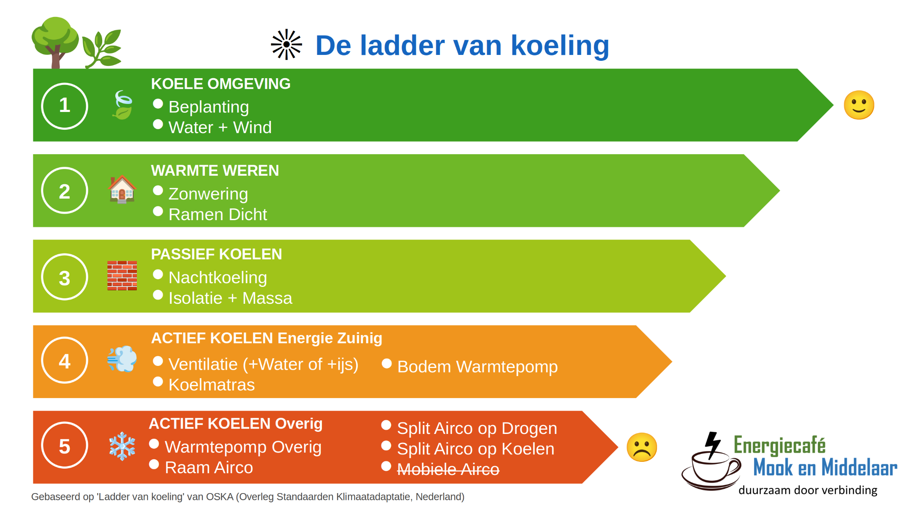

De ladder van koeling geeft aan waar je bij als eerste op moet inzetten om een woning koel te houden.
De bovenste trede geeft de acties die de minste CO2 uitstoot geven en meestal ook de acties die het goedkoopste zijn.
Een koele woning begint bij een koele omgeving. Niet dat een koele omgeving de woning koelt, maar het geeft je de mogelijkheid om naar een koele plek te gaan. Een duidelijk voorbeeld waarbij het wel direct effect heeft, is het balkon van een flatgebouw.
In tweede instantie kan je maatregelen nemen om de warmte zo veel mogelijk buiten je woning te houden.
Vervolgens kun je passief gaan koelen.
En als het uiteindelijk nog niet koel genoeg is kun je actief gaan koelen, waarbij er methoden zijn de relatief goedkoop en weinig CO2 uitstoot hebben en methoden die duur zijn en veel CO2 uitstoten.

Een website die het allemaal nog eens heel goed en simpel uitlegt (van onze Zuiderburen).
https://www.warmedagen.be/hou-gebouw-en-omgeving-koel